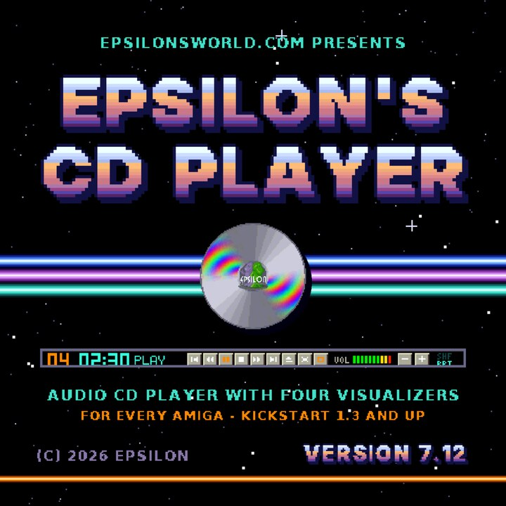
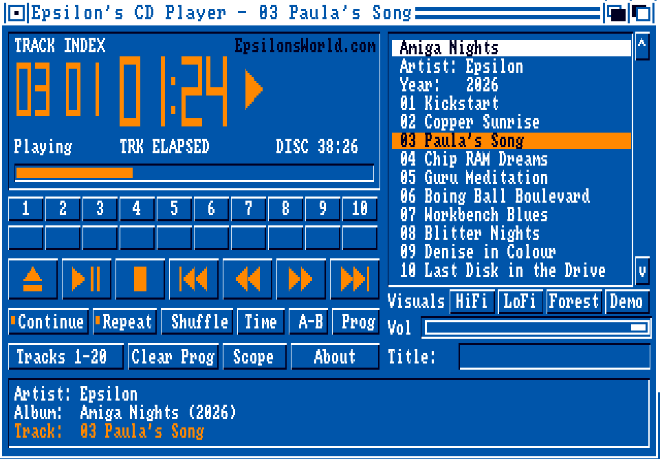
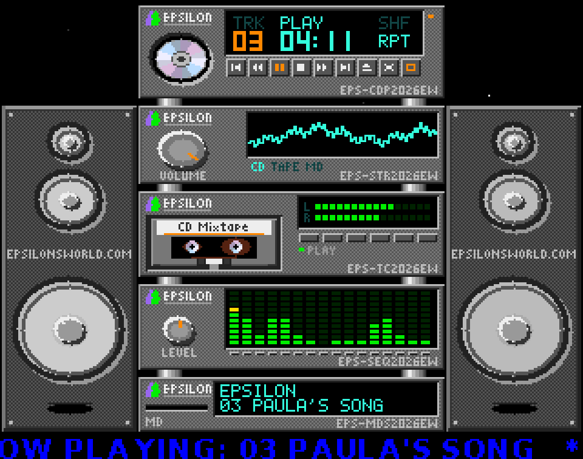
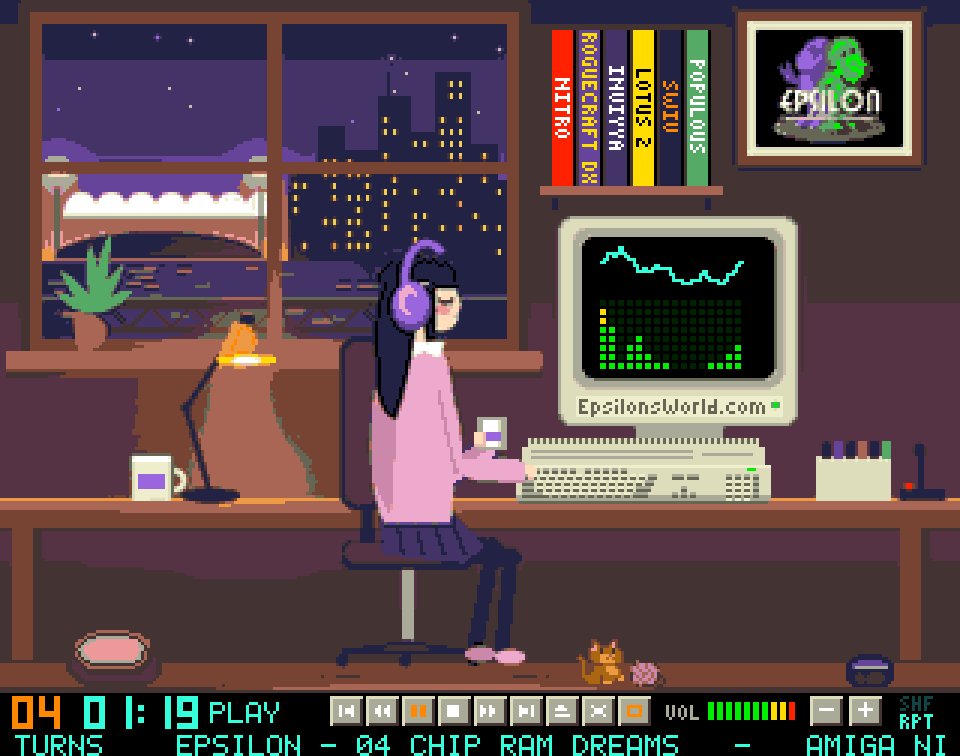
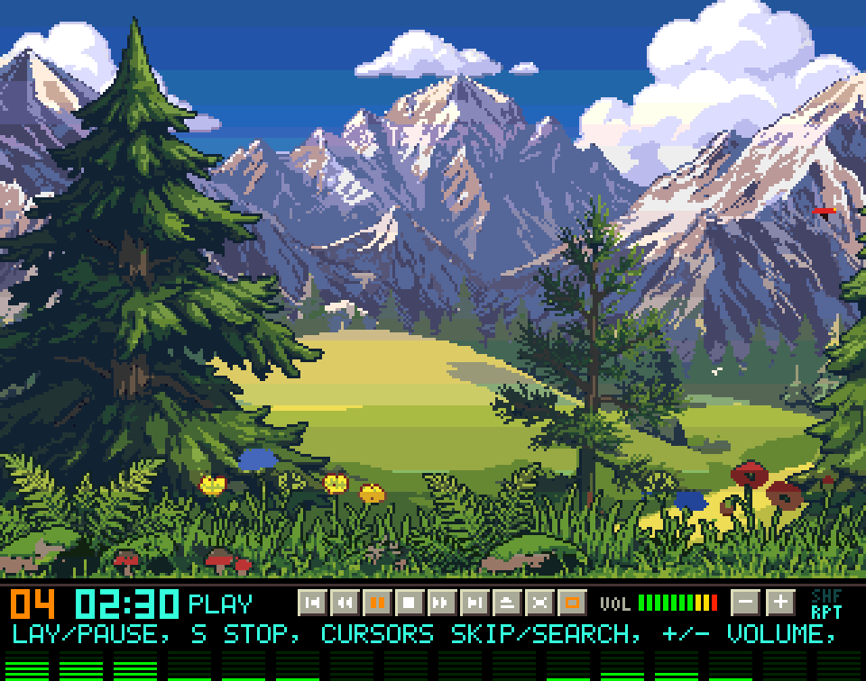
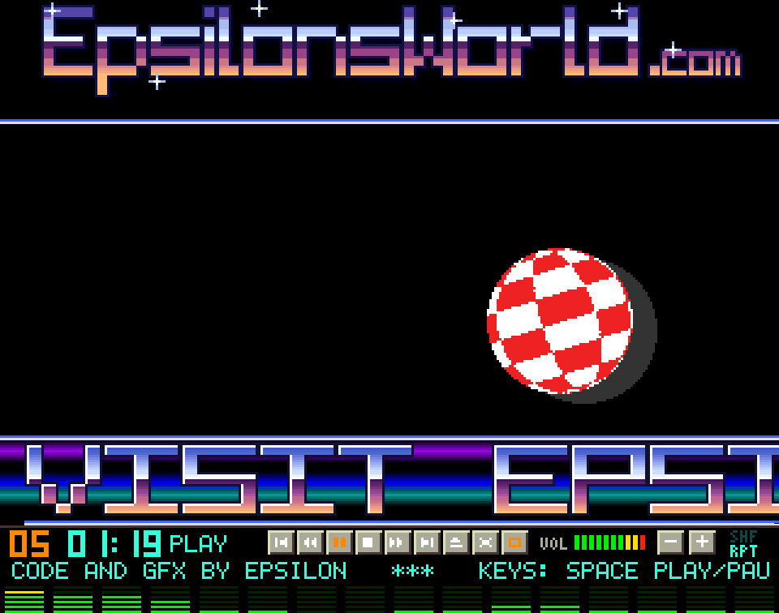

Epsilon's CD Player Version 7.12 · CDPlay 4.12
An audio CD player for every Amiga, from a Kickstart 1.3 A500 with 1 MB upwards. It plays audio CDs from SCSI and IDE CD-ROM drives in a window on the Workbench screen, remembers the titles of every disc, and comes with a Shell command and four full-screen visualizers.


Workbench 1.3 and up · SCSI and IDE drives · HiFi, LoFi, Forest and Demo visualizers
Program archiveLHA, 714 KB · for a hard disk
Bootable floppyADF disk image, 880 KB
CD imageISO, 3 MB · with the manual
User manualPDF, 24 pages
Freeware · free to share unchanged, including on Aminet · No warranty of any kind — use at your own risk. Release notes: version 7.12.
What it does
- Plays audio CDs from SCSI-2 drives on any SCSI controller (A590, A2091, GVP and others), early Toshiba SCSI drives and IDE (ATAPI) drives — and finds the drive by itself.
- All the controls — play/pause, stop, eject, track skip and search, track buttons up to 99 tracks, volume, Continue, Repeat, Shuffle, program play and A-B loop.
- Disc titles — album, artist, year and track titles typed straight into the window, recalled whenever the disc goes back in.
- Scope — waveform, 32-band spectrum and VU meters from a parallel-port sampler such as the GVP DSS8.
- Four full-screen visualizers using the Amiga's own copper, sprites and blitter.
- CDPlay — a Shell command version, with a DIAG command to check how a drive answers.
- Small — about 292K, no extra libraries, runs on a 68000 with Kickstart 1.3.




Requirements
| Amiga | Any Amiga with Kickstart/Workbench 1.3 or later and 1 MB of memory (512K chip memory is enough) |
|---|---|
| CD-ROM drive | SCSI-2 on any SCSI controller, early Toshiba SCSI, or IDE (ATAPI) with a driver that takes SCSI commands. CDTV and A570 drives: experimental. |
| Sound | The drive's own audio outputs connected to an amplifier |
| Optional | A parallel-port sampler (GVP DSS8 or similar) for the scope and visualizers |
| Tested on | A500 (Workbench 1.3, A590), A2000, A3000, A4000T and A1200 (AmigaOS 3.1.4 and 3.2.2) |
Which download?
- Program archive (.lha) — for a hard disk. Unpack it with LhA on the Amiga (or The Unarchiver on a Mac), drag the EpsilonsCDPlayer drawer to your hard disk and double-click EpsilonsCDPlayer. Includes the floppy image, the alternate icon sets and the C and assembler source.
- Bootable floppy (.adf) — for an Amiga without a hard disk. Write it to a floppy with ADFBlitzer or transdisk, or use it on a floppy emulator or in WinUAE/FS-UAE. It starts the player straight away.
- CD image (.iso) — everything plus the manual, to burn to a CD-R or use in an emulator.
Freeware licence. Free to use, and free to copy and pass on — including on Aminet, cover disks, PD libraries and CD collections — as long as it is complete and unchanged and no more than a small fee for the media is charged. Not to be sold or included in commercial products, and modified versions not to be passed on, without written permission. No warranty of any kind — use at your own risk. Full terms are in the readme and the manual.
By Epsilon / EpsilonsWorld.com, with the assistance of Claude AI. Forest artwork: "Pine Forest" by Marcin Rygulski (Digital Worlds Studio). LoFi cat: Cozy Cat Pixel Art Pack © FOTOPIXY. Amiga is a trademark of its respective owner.